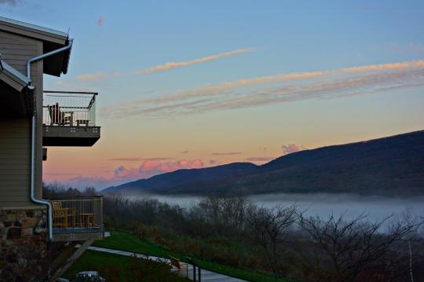
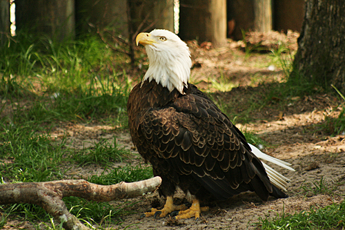

Bald Eagle State Park is a park that is located about an hour away from Williamsport, at this state park there are many activities that anyone no matter what age can do anything.
At this park they have their own trails that you can hike on, you can camp at the park at different areas, you can also hunt and fish in their area for anyone that like sto do that,
Wildlife photography and Wildlife Watch and of course boating as well.
This state park ranges over 5,900 acres of lan and 1,730 acre of Lake Laps as well in their local lake that you can swim in and also boating and fishing. When it comes to the state park there are
many schools, organizations, religion groups that bring their class/groups there to explore nature as well as for activities.
When it ccomes to their trails you can see many wildlife and gorgeeous vistas that look over the land to where you can even see some baldeagles and other birds as well.